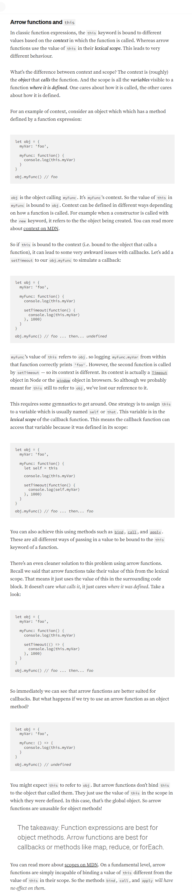

But arrow functions are not just syntactic sugar for the classic function expressions. There are some big differences of which you should be aware. These differences make arrow functions extra awesome, but they can trip you up if you’re not careful. Sometimes arrow functions won’t cut it and you’ll need to use the good old function expressions.
